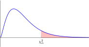

Section B.3 Chi-Squared Distribution
¶
| \(df\) | \(\chi^2_{0.99}\) | \(\chi^2_{0.95}\) | \(\chi^2_{0.90}\) | \(\chi^2_{0.10}\) | \(\chi^2_{0.05}\) | \(\chi^2_{0.01}\) | |||||||
| \(1\) | 0.000 | 0.004 | 0.016 | 2.706 | 3.841 | 6.635 | |||||||
| \(2\) | 0.000 | 0.103 | 0.211 | 4.605 | 5.991 | 9.210 | |||||||
| \(3\) | 0.115 | 0.352 | 0.584 | 6.251 | 7.815 | 11.345 | |||||||
| \(4\) | 0.297 | 0.711 | 1.064 | 7.779 | 9.488 | 13.277 | |||||||
| \(5\) | 0.554 | 1.145 | 1.610 | 9.236 | 11.070 | 15.086 | |||||||
| \(6\) | 0.872 | 1.635 | 2.204 | 10.645 | 12.592 | 16.812 | |||||||
| \(7\) | 1.239 | 2.167 | 2.833 | 12.017 | 14.067 | 18.475 | |||||||
| \(8\) | 1.646 | 2.733 | 3.490 | 13.362 | 15.507 | 20.090 | |||||||
| \(9\) | 2.088 | 3.325 | 4.168 | 14.684 | 16.919 | 21.666 | |||||||
| \(10\) | 2.558 | 3.940 | 4.865 | 15.987 | 18.307 | 23.209 | |||||||
| \(11\) | 3.053 | 4.575 | 5.578 | 17.275 | 19.675 | 24.725 | |||||||
| \(12\) | 3.571 | 5.226 | 6.304 | 18.549 | 21.026 | 26.217 | |||||||
| \(13\) | 4.107 | 5.892 | 7.042 | 19.812 | 22.362 | 27.688 | |||||||
| \(14\) | 4.660 | 6.571 | 7.790 | 21.064 | 23.685 | 29.141 | |||||||
| \(15\) | 5.229 | 7.261 | 8.547 | 22.307 | 24.996 | 30.578 | |||||||
| \(16\) | 5.812 | 7.962 | 9.312 | 23.542 | 26.296 | 32.000 | |||||||
| \(17\) | 6.408 | 8.672 | 10.085 | 24.769 | 27.587 | 33.409 | |||||||
| \(18\) | 7.015 | 9.390 | 10.865 | 25.989 | 28.869 | 34.805 | |||||||
| \(19\) | 7.633 | 10.117 | 11.651 | 27.204 | 30.144 | 36.191 | |||||||
| \(20\) | 8.260 | 10.851 | 12.443 | 28.412 | 31.410 | 37.566 | |||||||
| \(25\) | 11.524 | 14.611 | 16.473 | 34.382 | 37.652 | 44.314 | |||||||
| \(30\) | 14.953 | 18.493 | 20.599 | 40.256 | 43.773 | 50.892 | |||||||
| \(35\) | 18.509 | 22.465 | 24.797 | 46.059 | 49.802 | 57.342 | |||||||
| \(40\) | 22.164 | 26.509 | 29.051 | 51.805 | 55.758 | 63.691 | |||||||
| \(45\) | 25.901 | 30.612 | 33.350 | 57.505 | 61.656 | 69.957 | |||||||
| \(50\) | 29.707 | 34.764 | 37.689 | 63.167 | 67.505 | 76.154 | |||||||
| \(60\) | 37.485 | 43.188 | 46.459 | 74.397 | 79.082 | 88.379 | |||||||
| \(70\) | 45.442 | 51.739 | 55.329 | 85.527 | 90.531 | 100.425 | |||||||
| \(80\) | 53.540 | 60.391 | 64.278 | 96.578 | 101.879 | 112.329 | |||||||
| \(90\) | 61.754 | 69.126 | 73.291 | 107.565 | 113.145 | 124.116 | |||||||
| \(100\) | 70.065 | 77.929 | 82.358 | 118.498 | 124.342 | 135.807 | |||||||